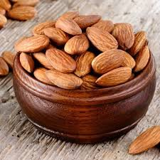
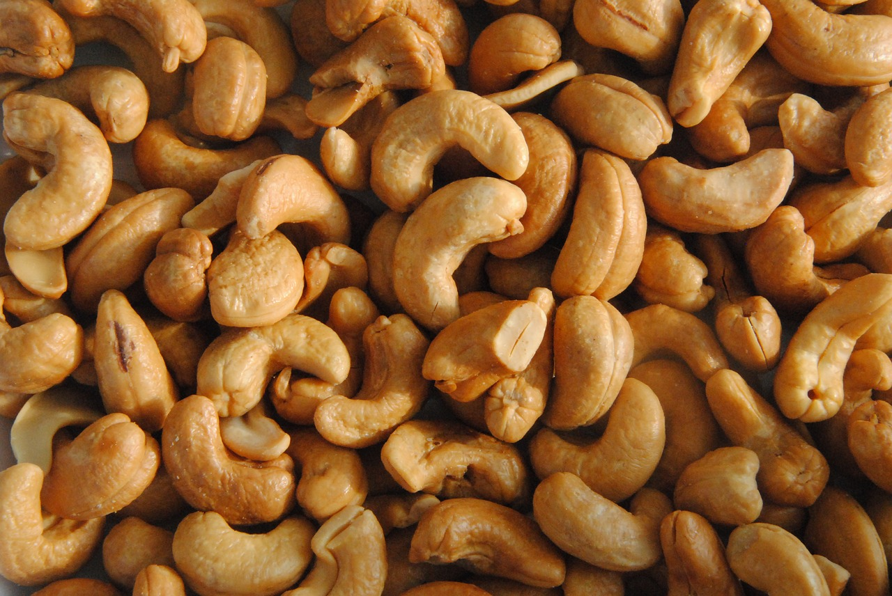
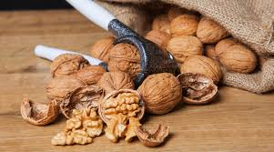
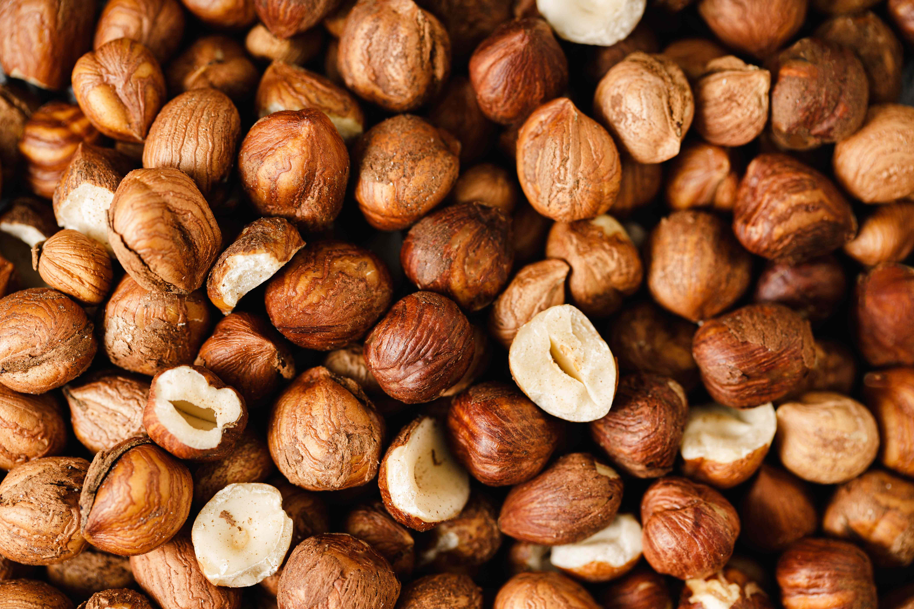
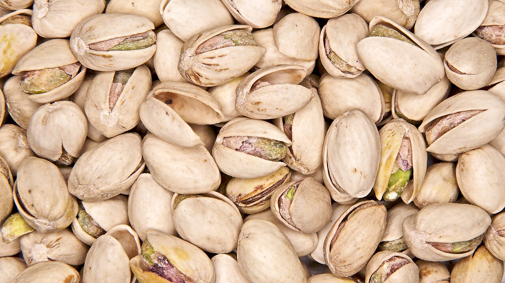
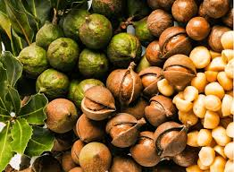
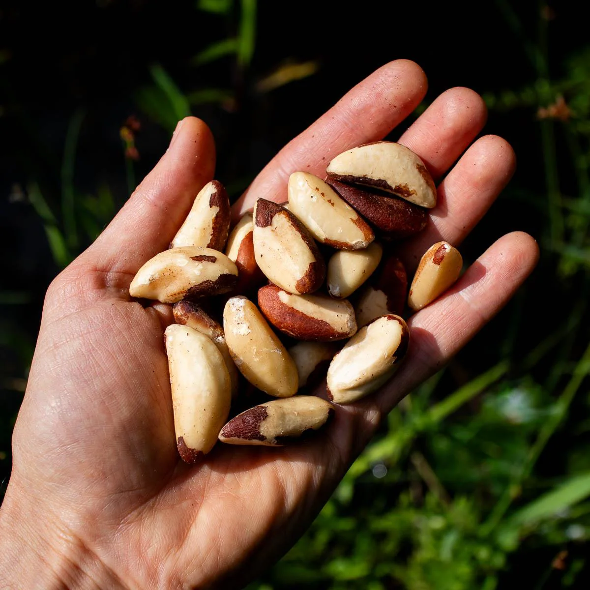

1 Jenis Kacang Pokok Utama

Badam (Almond)

Gajus (Cashew)

Walnut

Hazelnut

Pistachio

Pecan

Macadamia

Brazil Nut
Waspada Produk Ini
- • Nutella / Sapuan Coklat: Mengandungi Hazelnut.
- • Pesto Sauce: Tradisinya menggunakan Pine Nuts.
- • Marzipan: Pes manis yang diperbuat daripada Badam.
- • Minyak Nut: Minyak walnut atau badam dalam salad.
- • Ekstrak Perasa: Ekstrak badam tiruan vs asli.
- • Bar Tenaga / Granola: Sumber utama kacang pokok.
- • Susu Alternatif: Susu badam, gajus, atau macadamia.
- • Produk Penjagaan Diri: Losyen atau syampu dengan minyak badam/shea butter.
Nota untuk Rakyat Malaysia
Walaupun kacang tanah (Peanut) lebih banyak dalam masakan harian kita, Gajus sering digunakan dalam masakan kurma, rendang tertentu, atau sebagai snek premium. Jika anda makan di restoran mewah atau kedai roti (bakery), pastikan anda bertanya tentang penggunaan campuran kacang pokok dalam kek dan pastri.
Tips Untuk Pesakit Alahan Kacang Pokok:
Elakkan 'Bulk Bins': Jangan beli makanan dari bekas terbuka di pasaraya (seperti bahagian timbang sendiri) kerana risiko pencemaran silang melalui senduk adalah amat tinggi.
EpiPen Adalah Wajib: Alahan kacang pokok dikenali sebagai pencetus anaphylaxis yang sangat pantas. Sentiasa bawa bekalan ubat kecemasan anda.
Baca Label Kosmetik: Sesetengah losyen badan berkualiti tinggi menggunakan minyak kacang pokok yang boleh menyebabkan reaksi pada kulit sensitif.